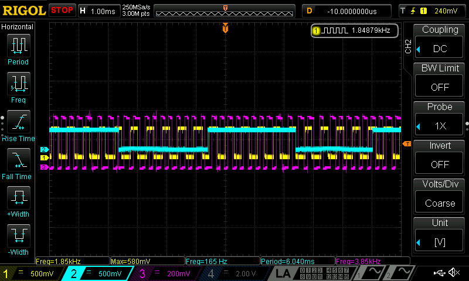

Lab 5: Interrupts
Sebastian Heredia | dheredia@g.hmc.edu | October 9, 2025
Introduction
In this lab, the STM32L432KC MCU was configured with interrupts to measure the rotational speed and direction of a 25GA-370 brushed DC motor containing a quadrature encoder. Pulses from the encoder were detected on the rising and falling edges of both encoder signals to achieve a high degree of accuracy in real-time.
Background
Lab Overview
This lab consisted of two primary goals. The first goal was to implement an interrupt algorithm to sense quadrature encoder pulses and convert them into motor velocity. The second goal was to display the measured speed with direction to a user with an update rate of at least 1Hz. Moreover, the interrupts were set to trigger on both the rising and falling edges of the encoder pulses to optimize accuracy when determining elapsed time between pulses.
Quadrature Encoder
A quadrature encoder is an incremental sensor with two or more out-of-phase output channels that can detect the speed and direction of motion of a rotating shaft. Since the channels are offset by 90º as shown in Figure 1, when channel A leads channel B, the motion is clockwise (CW), and when B leads A, the direction is reversed (CCW). In this specific lab, the quadrature encoder measures the angle of the DC brushed motor axle using Hall effect sensors which count pulses in the form of magnetic fields.
 Figure 1: Quadrature encoder setup with Hall effect sensors 90º out of phase to determine direction.
Figure 1: Quadrature encoder setup with Hall effect sensors 90º out of phase to determine direction.
As the motor rotates, the Hall effect sensors will output will register HIGH (1) when passing a fixed point within the motor casing, otherwise they register LOW (0). In this way, a square wave alternating between HIGH and LOW is created for each encoder.
Methods & Designs
Unlike the previous lab, the CMSIS libraries were provided which meant structs for each register did not need to be configured from scratch. From the E155 Repository, GPIO, RCC, and TIM files were recycled. For this project, main.c was updated to implement the design. Additionally, the flow of the interrupt design can be visualized in Figure 2 pictured below.
Figure 2: Flowchart illustrating the main loop, setups, and interrupt sequence of the design.
Direction Logic
Once an interrupt is triggered in compute_velocity, the interrupt handler determines the direction of the motor by comparing the encoder states before the interrupt to the encoder states when the interrupt is triggered by a motor rotation. The handler, EXTI9_5_IQRHandler, determines direction by checking which encoder is “seen” first from a given initial state combination. Since there are two encoders and each encoder can occupy one of two states (HIGH or LOW), there are 2^2 = 4 total state combinations. Figure 3 below shows a visualization of how moving between the four encoder state combinations results in clockwise (CW) motion when ENCODER_A leads versus counter-clockwise (CCW) motion when ENCODER_B leads. For example, if the last state combination is A = 0 and B = 0 and the next state combination is A = 1 and B = 0, then the direction is CW since A is “seen” first and is therefore leading B. Examining this approach more closely, a future design might only check the current state of each encoder since the interrupt actually only fires when the encoder readings change. That is, the current direction does not depend on the previous direction since the interrupt only monitors the current direction.
Figure 3: Visualization of leading and lagging square wave signals between ENCODER_A and ENCODER_B.
Speed Logic
Motor speed in revolutions per second (rev/sec) was calculated by RPS = counter / (PPR * 4) where counter represents the number of pulses in 1 second and PPR = 408 is the known pulse per revolution rate provided in the motor datasheet. In this equation, PPR is scaled by 4 to account for the four flags raised per revolution by the rising and falling edge of ENCODER_A and rising and falling edge of ENCODER_B.
Moreover, measured speed was verified by the calculations shown below in Figure 4 for a 12V input. Importantly, the frequency in Figure 4 is read straight from the oscilloscope, so it has already accounted for the four encoder edges, therefore dividing by 4 is ommitted from the RPS calculation.
Figure 4: Verifying motor speed by comparing to the theoretical speed listed in the datasheet for 12V.
Since the measured speed of 2.917 rev/sec at 12V is very close to the theoretical speed of 2.5 rev/sec at 12V, the measured speed matches the true motor speed. The slight variation between the measured and theoretical speeds could be a result of the motor speed itself fluctuating or the analog power supply dial being set slightly past the 12V mark internally.
Schematic
The schematic for this lab was straightforward and can be viewed below in Figure 5.
Figure 5: Electrical schematic for the lab consisting of the MCU, brushed motor, and power supply.
Polling vs. Interrupting
In order to monitor whether the two encoder signals are HIGH or LOW at a given time, they must continuously read by the MCU. One way to achieve this is through polling—a method where the main loop constantly cheks if the GPIO pins connected to the encoder outputs have changed. The issue with polling, however, is that everything inside the main while loop takes time to execute. As a result, if the processor is occupied with other operations, it may fail to detect a rapid change in the encoder signal. In other words, polling can lead to inaccurate, aliasing behavior. To address this limitation, interrupts are used. Interrupts enables the microcontroller to immediately respond to specific events, such as a change in input state, without waiting for the main loop to complete.
The oscilloscope trace in Figure 6 shows the following signals: Yellow = ENCODER_B, Blue = POLLING_PIN, and Pink = INTERRUPT_PIN for a high speed set by 20V. At this fast motor speed, the trace shows that the polling signal frequency is too large to accurately sample the encoder, whereas the interrupt signal can effectively sample the encoder. According to the Nyquist-Shannon Sampling Theory, since the interrupt signal frequency of 3.85kHz is greater than double the maximum frequency of the encoder signal which is 1.85kHz, the interrupt signal can accurately read all encoder changes. This shows how applying interrupts instead of polling leads to more accurate encoder readings over a wide range of motor speeds.
 Figure 6: Oscilloscope trace showing Yellow = ENCODER_B where Blue = POLLING_PIN aliases and Pink = INTERRUPT_PIN samples correctly.
Results & Discussion
The final implementation successfully measured and displayed the motor speed in rev/sec and direction with an update rate of at least 1Hz. Moreover, all edges of the encoder pulses were used to achieve the highest resolution measurement. Lastly, the MCU did not miss any pulses at high speed and properly output a non-zero velocity at very low speeds.
Conclusion & Demo
All designs were successfully implemented. The lab took 21 hours to complete.
This lab solidified by understanding of interrupts the comparison between polling and interrupt-driven approaches highlighted the efficiency and accuracy advantages of using interrupts for real-time signal processing. Overall, this lab strengthened my understanding of hardware-level event handling and its importance in embedded system design.
AI Prototype
The purpose of the AI Prototype is to experiment with usign AI as a coding assistant to navigate memory maps and guide the configuration of various peripherals. The following prompt was entered to ChatGPT 5.0.
Write me interrupt handlers to interface with a quadrature encoder. I’m using the STM32L432KC, what pins should I connect the encoder to in order to allow it to easily trigger the interrupts?
While ChatGPT 5.0 was able to produce a response quickly, the code did not compile immediately because it contained lines that we not not spelled the same or did not exist in the libraries I used. For example, I did not have a "stm32l4xx_hal.h" header file. After I replaced this with <stm32l432xx.h>, the code compiled and ran. However, the printed output was incorrect. The magnitude of velocity was always near 0.000 and the direction was constantly CW. ChatGPT may be more helpful if it is familar with your libraries.